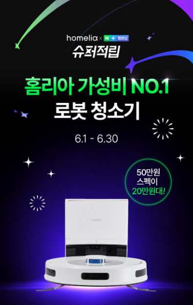
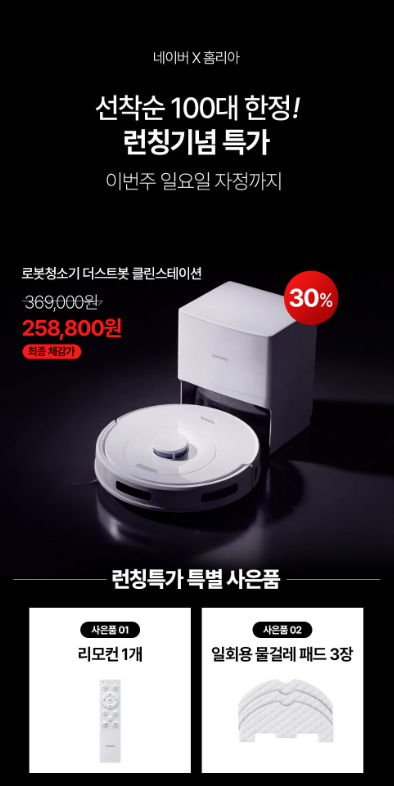

1. 홈리아 올인원 물걸레 로봇청소기은 어떤 제품일까?
흡입 청소와 물걸레 청소를 자동으로 수행하고 충전 스테이션을 중심으로 관리하는 올인원 로봇청소기입니다. 제품명만 보고 주문하기보다 사용할 공간과 바닥 환경, 정확한 구성품과 관리 방법을 함께 확인하는 것이 중요합니다.
2. 올인원 로봇청소기의 작동 방식
홈리아 올인원 물걸레 로봇청소기는 집 안 지도를 만들고 설정된 구역을 따라 이동하면서 먼지 흡입과 물걸레 청소를 수행하는 제품입니다. 청소 후에는 스테이션으로 복귀해 충전하며, 판매 구성에 따라 먼지 비움과 걸레 세척 등 관리 기능을 지원할 수 있습니다.

3. 지도와 방별 청소 설정
로봇청소기의 편의성은 지도 정확도와 앱 기능에서 크게 차이가 납니다. 거실과 침실을 구분하고 특정 방만 청소하거나 금지구역과 가상벽을 설정할 수 있는지 확인하세요. 복층 구조에서는 여러 지도를 저장할 수 있는지도 중요합니다.
4. 물걸레 청소와 카펫 대응
물걸레 방식은 고정 패드, 회전형 또는 진동형 등으로 나뉠 수 있습니다. 카펫이 있는 집이라면 카펫을 감지해 물걸레를 들어 올리거나 해당 구역을 피할 수 있는지 확인해야 합니다. 물 공급량을 단계별로 조절할 수 있으면 바닥 재질과 오염 정도에 맞게 사용할 수 있습니다.

5. 스테이션 관리와 소모품
자동 먼지 비움과 걸레 세척 기능이 있어도 먼지봉투, 오수통, 세척 트레이와 필터는 주기적으로 관리해야 합니다. 오수통을 오래 방치하면 냄새가 날 수 있으므로 청소 후 상태를 확인하고, 걸레 건조 방식과 소모품 가격도 함께 살펴보세요.
6. 장애물과 문턱
전선, 양말, 얇은 매트와 반려동물 용품은 로봇청소기의 주행을 방해할 수 있습니다. 장애물 회피 센서가 있어도 바닥을 간단히 정리하면 청소 실패를 줄일 수 있습니다. 제품이 넘을 수 있는 문턱 높이와 낮은 가구 아래 진입 가능 높이도 확인하세요.
7. 구매 전 체크리스트
- 판매 페이지의 정확한 모델명과 색상을 확인합니다.
- 사용할 바닥과 공간에 맞는 제품인지 확인합니다.
- 기본 구성품과 별도 구매 소모품을 확인합니다.
- 배터리 사용시간과 충전·거치 방식을 확인합니다.
- 물통, 먼지통, 필터와 롤러 관리 방법을 확인합니다.
- 세척과 건조 기능의 작동 범위를 확인합니다.
- 배송, 교환, 반품과 보증 조건을 확인합니다.
싸게살래 가전·디지털 목록에서 무선청소기와 로봇청소기 등 다양한 구매 가이드를 확인할 수 있습니다.
가전·디지털 전체 상품 보기 →자주 묻는 질문
구매 전에 가장 먼저 확인할 것은 무엇인가요?
정확한 모델명과 핵심 기능, 기본 구성품, 설치·보관 공간과 소모품 비용을 먼저 확인하는 것이 좋습니다.
자동 세척 기능이 있으면 직접 청소하지 않아도 되나요?
자동 세척은 롤러나 내부 통로 관리에 도움을 주지만 물통, 필터, 세척 트레이와 이물질은 정기적으로 직접 관리해야 합니다.
표시된 최대 사용시간만 보면 되나요?
최대 사용시간은 특정 모드를 기준으로 표시될 수 있습니다. 실제 사용시간은 흡입 단계, 물 분사와 브러시 구동 여부에 따라 달라질 수 있습니다.
일반 세제를 넣어도 되나요?
일반 세제는 거품과 내부 막힘을 유발할 수 있으므로 제조사가 허용한 전용 세제나 권장 방법을 따라야 합니다.